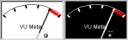

|
class Meter : public Ctrl
As seen in layout designer
|
As seen in program
|

|

|
|

|
|
Meter shows an analogue meter.
Meter()
Initializes Meter.
Meter& SetMin(double v)
Sets v as the min display value.
Meter& SetMax(double v)
Sets v as the max display value.
Meter& SetPeak(double v)
Sets v as the value that if overpassed the peak red light is switched on.
If peak == max, no peak light will appear.
Meter& SetStep(double v)
Sets v as the value between display ticks.
Meter& SetAngleBegin(double v)
Sets v as the angle in degrees for the min value.
Meter& SetAngleEnd(double v)
Sets v as the angle in degrees for the max value.
Meter& SetText(String s)
Sets s as the text to appear in the meter background.
Meter& ClockWise(bool v)
If v is true the value increasing is clockwise, else is counterclockwise.
Meter& SetNumber(bool v)
If v is true numbers will appear every step mark.
Meter& SetColorType(int c)
Sets the color style.
Valid c color style values are ColorType::WhiteType and ColorType::BlackType.
Meter& SetSpeed(double s)
Sets the handle movement speed s as the time in seconds the handle would moving from min to max value.
Default is 1 second.
Meter& SetSensibility(int s)
Sets the handle movement sensibility s.as the number of handle movements between the min and the max values, so every step the handle will move (max - min)/sensibility. Default is 10.
void SetData(const Value& v)
Sets the value to v.
|
{kind=link}
{kind=link}